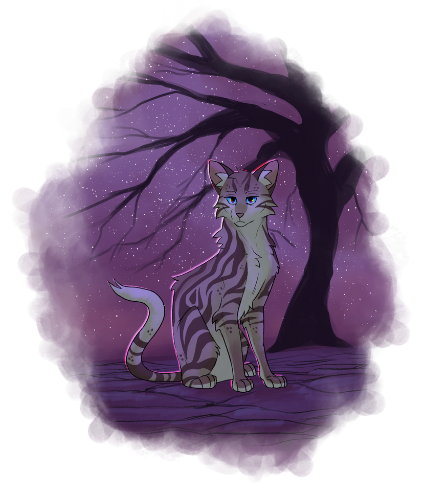

The last thing you remember about being alive is the splitting pain in your head. You had wanted nothing more than for the pain to go away, for your head to stop burning like this.
And then it stopped. It was so sudden and abrupt your eyes had flown open in panic. But the mountain was gone, and you were standing in nothing. Blackness stretched onwards, except for the cat standing directly in front of you. Except this wasn’t a cat. It was red--as red as the strings you’d grown used to seeing. It was shaped exactly like you but it had no features, no pelt or markings or face. It was just red. It stared at you with burning white eyes and you could hear that familiar humming noise, the one that you always heard when you got too close to the strings. It looked unstable, the edges of its form jumping and twisting randomly. Particles of red light shed here and there from its body.
It steps past you. You aren’t afraid of it, you realize. Just shocked. You turn to follow its walk, and for the first time you notice it in the darkness: yourself. Your body. Laying on the ground behind you, dead and gone. Lifeless and cold. Now, you are afraid. The red thing steps up to the body and you cannot move, cannot cry out. There is a moment when the red turns to look at you one more time, and there is a flash.
And then you are somewhere. Now, you are standing somewhere. Twilight peeks over the horizon. Stars twinkle overhead--millions of them. More than you have ever seen, but farther away than you ever remember the sky feeling. The hard-packed sediment under your paws is dry and dusty. There is a massive twisted tree in the distance; that is all there is. The tree is bigger than anything you had ever seen, the branches stretching outwards until they vanished into the sky.
You are not alone. All of your trialmates stand among you just as you’d always remembered them. Their eyes are no longer red with the sickness. You look around at each other, getting your bearings.
A stranger sits in front of you. She doesn’t seem surprised to see you here, and the cats you’d seen get the Plague first seem to have been speaking with her. She turns to everyone.
”The rest are here, now,” she says. ”Welcome, everyone. My name is Aberdeen. You have all died of the Red Plague, and this is where all who get sick come.” She pauses, thinking and observing you all. ”I don’t think anyone else will join us, now. Helena has your power, and I don’t think she needs any more to complete her world.”
”I’ll try to answer your questions as best as I can,” Aberdeen continues. ”But...please understand that I am just another soul here. I was the first to arrive, and I wandered this place alone for some time before I saw anyone else come. I found purpose in welcoming the dead to this purgatory, and that’s the only reason I’ve held onto myself all this time. I had...I had hope, I think, that you, the fledgelings, would put an end to the death. You’d stop the Plague. But...I see now that’s all it ever was. Hope.” She sighs, shaking her head. ”Don’t take this as blame on you. It’s okay. It’s as Helena has said from the start-- our world was always doomed to die.”
”Please, come to me with any questions you have,” she says. ”I will try my best. But...I think once I have answered your questions, I will go away. The mists...they’re calling to me. They’ll call to you one day, too, I’m sure. I think I would like to rest.”
Aberdeen falls quiet then, and the silence hangs here in this space between life and death. And in the quiet, it hits you. It really finally hits you.
This was game over, and you had lost.
Welcome to the interim, The Red Purgatory! As always, interims are meant to be used as rest periods in the story, for you to relax without any participation requirements. Feel free to take a break, roleplay, level up, or more.
The current length of the interim is unknown but, as always, Calstan will announce a date when we know one!
A confusing wasteland. The sky overhead is bright with stars that seem too far away, too distant. A forever twilight hangs on the horizon. The ground under your paws is dry, flaking and crumbling like dust. There is no prey here, but you do not feel hungry.
In some areas, a heavy fog drifts through the landscape, obscuring your vision. It seems like you can travel, but your paws always carry you back to the main clearing no matter what you do. You catch glimpses of other cats in the distance, but they are always too far away to hear you, and no matter how much you chase them, you never reach them. Some of these cats you recognize. Lost souls of the Plagued.
The mists reach out to you. It is not malicious or even particularly friendly; it feels like it is offering you something. An escape, perhaps. You get the feeling if you welcome it, you will forget everything else. Succumb to the unknown and release yourself from the complicated intricacies of life. Spending too long in the mists will cloud your mind, confuse you about who you are, and who you were. You don’t want to do that. You don’t want to be lost here.
You don’t feel the breeze on your pelt or the pang of hunger or thirst here. You can feel pain; all of your injuries you sustained on the mountain are still very present. You can feel the warmth of another’s embrace-- the physical touch of another lost soul. This is what keeps you grounded, keeps your head clear and your eyes bright.
Your powers still work. Using your abilities also helps to keep your mind from drifting too far, from letting yourself be called into the endless abyss of mist. Your powers keep you anchored to what you had before. To the life you had before everything went wrong.
You do sleep, but it doesn’t happen quite like you remember it. You never remember sleeping, and you never remember waking up. But sometime in between those moments, you dream of memories. Your own memories, the happy and the sad and the calm and the horrifying. They are all so vivid, but they are also tinted with the color of your soul. It’s like your power is trying to remind you who you are.
All cats who get the Plague end up here. But all that have come before you, save for Aberdeen, have been lost in the mist. You are unable to reach them. Aberdeen tells you that sometimes a cat’s soul will leave this place, but only if their body on the other side dies a final death. If they don’t, they wander this place forever.
Thank you all for an incredible Trial 04. While we make our transition into the interim, we want to make sure you all understand what is happening next!
Thank you all again, and happy interim!